Participants
- Yoav Weiss, Barry Pollard, Marja Holtta, Michal Mocny, Benjamin De Kosnik, Andy Davies, Annie Sullivan, Carine Bournez, Jose Dapena Paz, Bas Schouten,
Admin
- Next Meeting: March 13, 2025 (Thursday) at 1pm ET / 10am PT
Minutes
Explicit compile hints - slides
Recording
- height: 356.54px; margin-left: 0.00px; margin-top: 0.00px; transform: rotate(0.00rad) translateZ(0px); -webkit-transform: rotate(0.00rad) translateZ(0px);" title="">
- Marja: Compile hints are for what should be lazy and what should be eager
- height: 305.95px; margin-left: 0.00px; margin-top: 0.00px; transform: rotate(0.00rad) translateZ(0px); -webkit-transform: rotate(0.00rad) translateZ(0px);" title="">
- ... Not normally captured in benchmarks
- ... Hard to capture parse and compile, but this is important for the real world
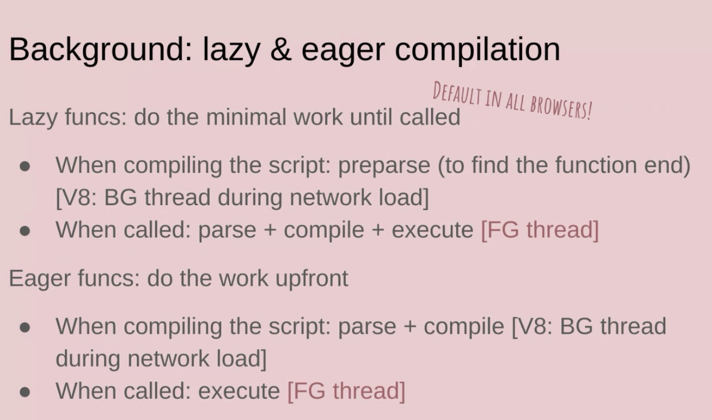
height: 417.71px; margin-left: 0.00px; margin-top: 0.00px; transform: rotate(0.00rad) translateZ(0px); -webkit-transform: rotate(0.00rad) translateZ(0px);" title="">- ... All browser implement lazy and eager compilation
- ... By default, all browsers make code compilation lazy, do minimal work
- ... Only pre-parse, minimal work to find function to execute
- ... We need to parse to know when function ends
- ... In V8 this is done in a background thread
- ... When function called, we need to do the work
- ... Happens on foreground thread
- ... For eager functions, we do the opposite, we do the work upfront
- ... Do parse and compile
- Bas: When execute, we potentially block on background thread?
- Marja: In eager case, we do the whole script
- Bas: Execution of whole script isn't triggered
- ... What if it's a parse-blocking script?
- Marja: Yes basically
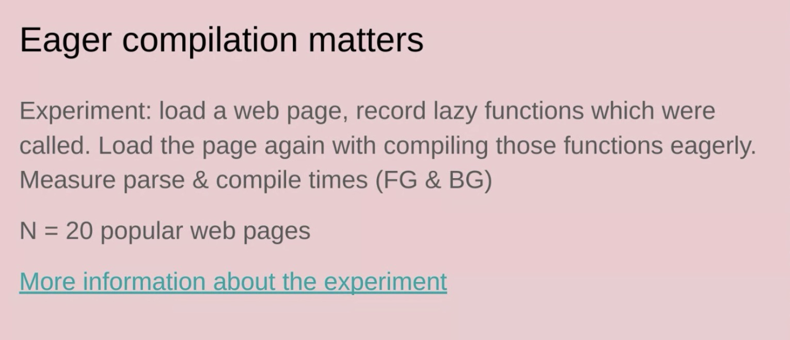
height: 295.67px; margin-left: 0.00px; margin-top: 0.00px; transform: rotate(0.00rad) translateZ(0px); -webkit-transform: rotate(0.00rad) translateZ(0px);" title="">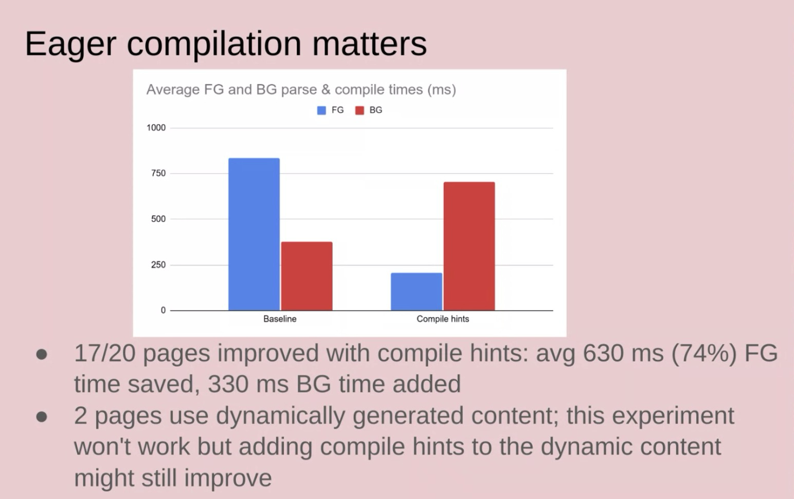
height: 376.15px; margin-left: 0.00px; margin-top: 0.00px; transform: rotate(0.00rad) translateZ(0px); -webkit-transform: rotate(0.00rad) translateZ(0px);" title="">- ... Did an experiment (with compile hints), most pages improved
- ... Some pages didn't work (dynamic generated content)
- ... Also experimented with actual webpages at Google
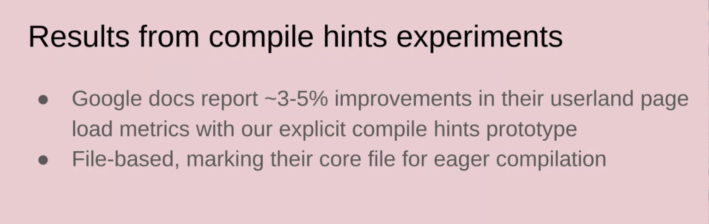
height: 192.20px; margin-left: 0.00px; margin-top: 0.00px; transform: rotate(0.00rad) translateZ(0px); -webkit-transform: rotate(0.00rad) translateZ(0px);" title="">- ... Compile hints where you mark whole file
- height: 374.42px; margin-left: 0.00px; margin-top: 0.00px; transform: rotate(0.00rad) translateZ(0px); -webkit-transform: rotate(0.00rad) translateZ(0px);" title="">
- ... PIFE heuristics to control eager/lazy compilations in Firefox/Chromium (but not safari)
- … Potentially Invoked Function Expressions
- … Used in production (e.g. Facebook). Optimizer.js, etc
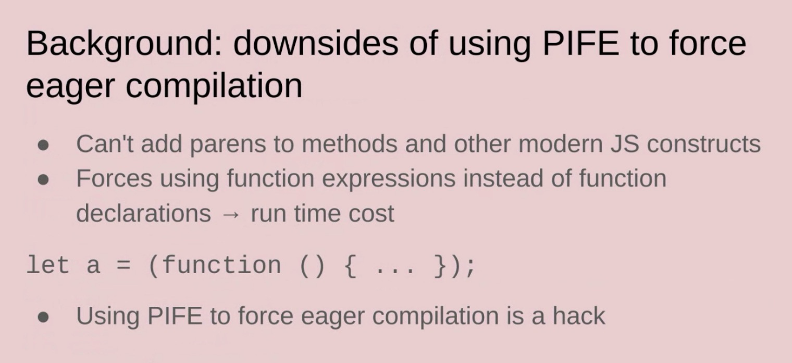
height: 264.73px; margin-left: 0.00px; margin-top: 0.00px; transform: rotate(0.00rad) translateZ(0px); -webkit-transform: rotate(0.00rad) translateZ(0px);" title="">- … Can’t add parens everywhere and forces the use of function expressions which can have some cost
- … All in all a hack
- … Why not just cache better?
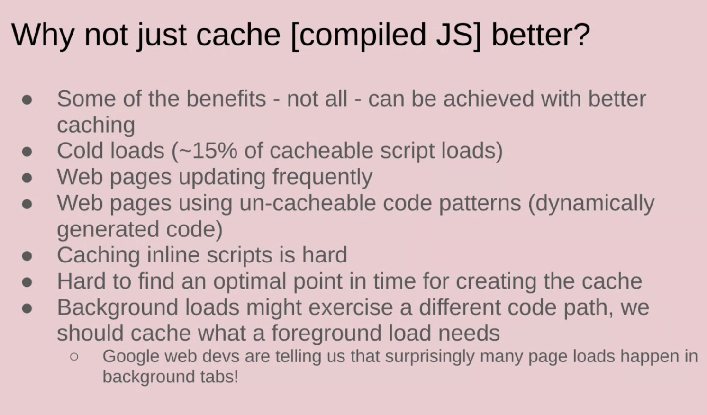
height: 343.77px; margin-left: 0.00px; margin-top: 0.00px; transform: rotate(0.00rad) translateZ(0px); -webkit-transform: rotate(0.00rad) translateZ(0px);" title="">- … Caching helps, but for cold loads the cache is empty (~15% of script loads)
- … Some pages update frequently, others have uncacheable code
- … Inline scripts add complexity
- … Google docs have a significant portion in a background tab, and caching in the background may not be included in foreground tabs
- … V8 improved caching and also caches compile hints, but explicit compile hints are better
- … Propose to add magic comments
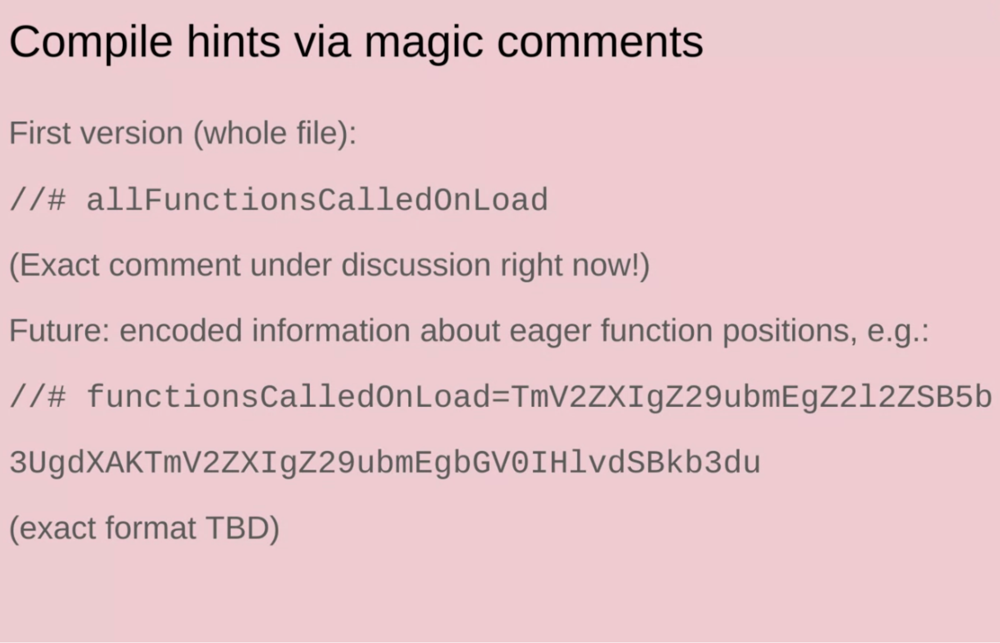
height: 462.24px; margin-left: 0.00px; margin-top: 0.00px; transform: rotate(0.00rad) translateZ(0px); -webkit-transform: rotate(0.00rad) translateZ(0px);" title=""> - … In the future want to enable function-specific hints as well
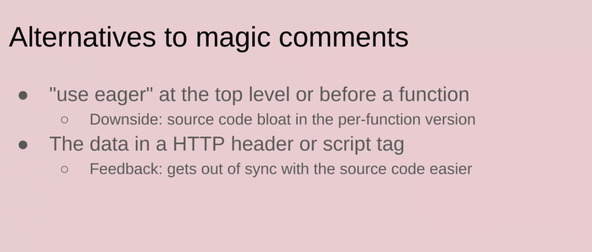
height: 297.95px; margin-left: 0.00px; margin-top: 0.00px; transform: rotate(0.00rad) translateZ(0px); -webkit-transform: rotate(0.00rad) translateZ(0px);" title="">- … Considered to add e.g. a “use eager” directive
- … Considered to put the data out of band, but were concerned about syncing issues
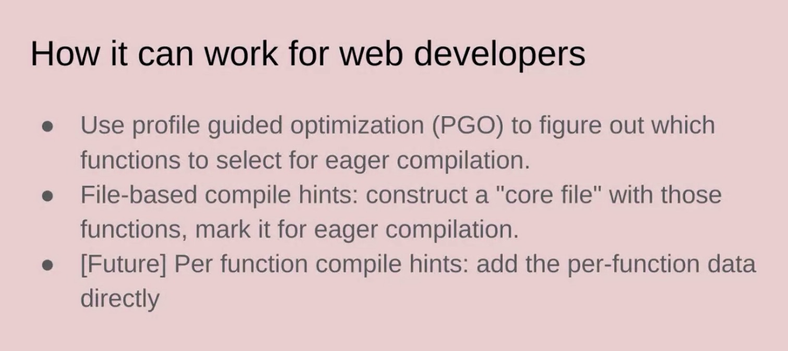
height: 340.79px; margin-left: 0.00px; margin-top: 0.00px; transform: rotate(0.00rad) translateZ(0px); -webkit-transform: rotate(0.00rad) translateZ(0px);" title="">- … Web developers are likely to use this with PGO - construct a “core file” and mark it
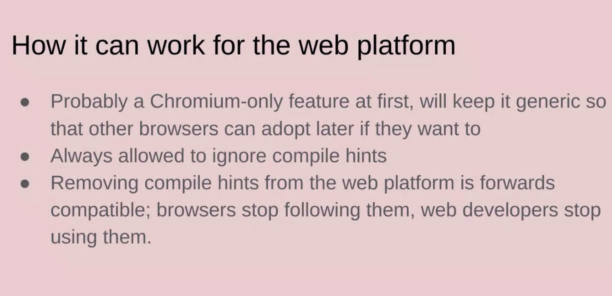
height: 299.44px; margin-left: 0.00px; margin-top: 0.00px; transform: rotate(0.00rad) translateZ(0px); -webkit-transform: rotate(0.00rad) translateZ(0px);" title="">- … For per-function compile hints expect that to be an output of PGO
- … Chromium-only initially, but there’s no interp risk
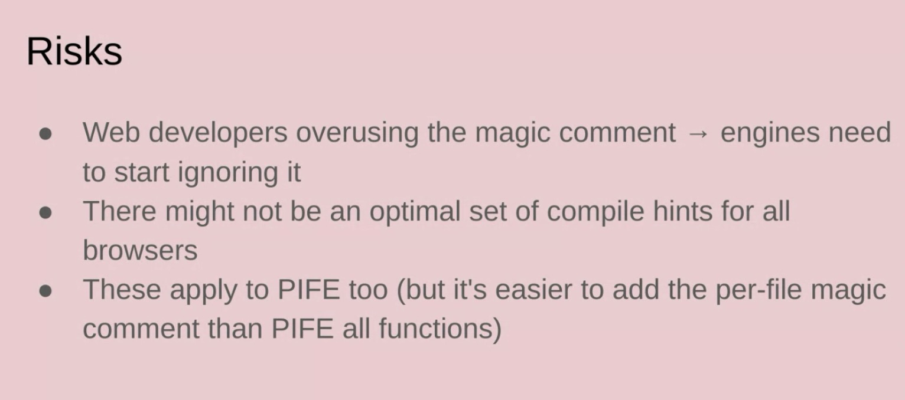
height: 264.87px; margin-left: 0.00px; margin-top: 0.00px; transform: rotate(0.00rad) translateZ(0px); -webkit-transform: rotate(0.00rad) translateZ(0px);" title="">- … Risks - what happens if web developers end up abusing this?
- … What happens if the compile hints differ between different engines? Expect most of the code to be browser-independent
- … These risks also apply to the PIFE hack, which was fine
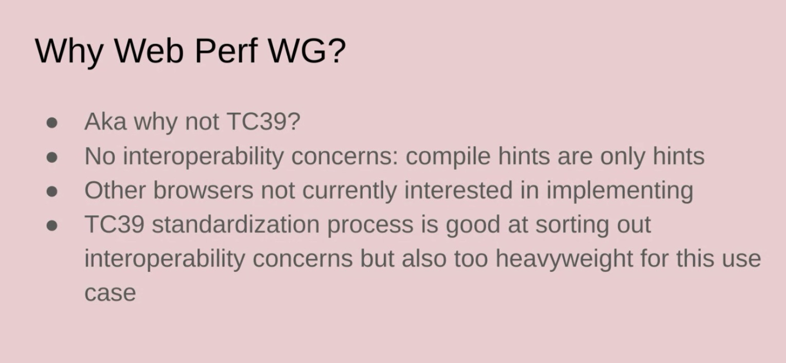
height: 347.22px; margin-left: 0.00px; margin-top: 0.00px; transform: rotate(0.00rad) translateZ(0px); -webkit-transform: rotate(0.00rad) translateZ(0px);" title="">- … Why WebPerfWG - no interop risk as these are only hints
- … Other browsers don’t seem interested in implementing - doesn’t work well with TC39 process
- … Explainer: https://github.com/WICG/explicit-javascript-compile-hints-file-based
- … Draft spec: https://wicg.github.io/explicit-javascript-compile-hints-file-based/
- Jacob: this is very interesting from a web developer perspective, where we have multiple bundles where we know one is executed first
- … But PGO is a broad term and I’m concerned it would be overused
- … I’m not sure how I would find which files should be eagerly compiled. Would be great if devtools did that
- Marja: Valid comment. Devtools support would be good
- … In experiments, we used console.logs or V8 log files
- … So the information exists/easy to get
- … But not specializing in dev tooling, so would love to collaborate with tooling folks
- … For per-function comments, want tools to be able to concatenate files
- Michal: what would happen if developers misused it? If you see one of these directives would it become most-eager/equivalent to PIFE?
- … would you have to apply the optimization to the whole bundle?
- Marja: This is the same as PIFE, so wouldn’t get higher compiler tiers or something similar
- Michal: So this is a concern that’s already out there
- Marja: yeah
- … about bundling, the per file version doesn’t work great with bundling, as there’s no granularity
- … but the per-function version should work well with bundlers
- Bas: Mozilla has communicated its position on this. Concerned that a “go faster” button would be abused.
- … Difference with PIFE as the effort here is low, which will result in abuse
- … Things could get worse if we eagerly compile too much
- … We saw improvements with eagerly compiling more, but share the concern. E.g. “willchange” that was abused, etc
- Marja: Definitely easier to add this than PIFE. We also want to avoid eagerly compile too much, but want to give developers this choice
- … but overuse is a legit concern
- Jose: similar to C++ inlining. The tradeoffs should be clear in dev documentation, so people understand that overusing it would degrade performance
- Michal: scheduling code for execution is “lazy”, “eager” or “idle”. “Lazy” is not sure to be used, where “idle” is “when you get to it”.
- Marja: Idle would be a third option that’s not in this proposal
- Michal: Code that might run eventually, and it’d be nice to compile it, but should block eager code
- Marja: Why ever ship the “lazy” code then?
- Barry: Less optimistic then Jose about 3Ps. E.g. “GTM has to be the first script”
- … Can see 3P pushing code that is unnecessarily eager
- Marja: Can be limited to 1P scripts, if abused by 3Ps
- Jacob Groß: +1 on first party
… (or whitelisted somehow? think CDN?)
- Michal Mocny: Slightly more conservative way of saying the same thing: applying these labels will improve metrics for those libraries, and would be rational for them to use it... but at the cost of other speed that isn't measured by them
- Jose: For 1P it’s OK, but for 3Ps maybe we need stricter rules
- Marja: As this is a hint, the browser can follow it or decide not to
- Barry: there are also cdn domains
- Marja: Browsers can have domain-specific heuristics on this
Async CSS
Recording
- Noam: Issue raised many times about why stylesheet/external CSS block parsing and what’s after
- … Why can’t we have an async CSS loader like we have script async
- … Load and applies whenever it’s ready
- … Doesn’t block, etc
- … Looked at this a little bit, main reason things are the way they are are FOUC
- … When you say something is async, this is going to race with everything else
- … Somewhere down the line we can handle the race-y ness
- … But often people don’t know how to handle it
- … I think script async is not optimal for web platform, anti-pattern
- … People can use async stylesheets today via media or rel tweaking
- … But there’s a request to have a markup way of doing it
- … We think script async isn’t something we should take inspiration from
- … Asking people what they would use this for?
- … How do you protect against FOUC
- … “I want to load below-the-fold content”, but then you’re racing w/ scroll
- … You could have unstyled content when you scroll
- ... Same with dialog-based, race with user interacting with dialog
- … We did find two places where there were legit scenarios
- … 1. Is with swapping fonts
- … Fonts and flash of unstyled text, already capable of dealing with, fallback font and swap
- … You can swap fonts but not the style loading fonts
- … A bit of a contradiction
- … 2. Totally invisible widget, and once style is loaded, it becomes visible
- … Bootstrapping style that makes it display:none, inline in HTML, then when style loads, it comes in with everything else and displays widget
- … Legit use-case in UX
- … In WICG proposal https://github.com/WICG/proposals/issues/195
- … Explore not copying async into CSS
- … But explore whether we can solve font problem, or with widget styled into existence
- … Made some suggestions in issue, <link rel=font-stylesheet>
- … Understand how important this is
- … Struggle with are these the only use-cases?
- Barry: Torn on this one, between how much we protect people from foot-gunning themselves, vs. giving them the opportunity for what they’re crying out for
- … No very good reasons besides font one
- … Want to hear other use-cases
- … Loading and FOUC is a valid concern
- … loading=lazy you don’t get images there, and they take a second to load in
- … Same with JS on neverending pages
- … On the fence, either way
- … I’d like to see 2-3 valid use-cases we haven’t considered that tell us we should ship this, and we don’t have that yet
- Andy: My experience, anecdotal and queries in HTTP Archive – Developers do not understand async CSS
- … They use it because they’re focused on network cost of CSS, and not the styling and layout cost
- … As soon as you make it async, you have no idea how many times you’ll do style+layout on the page
- … One benefit of async attribute is it’s explicitly marked
- … vs. JavaScript-based approach
- … At the moment if people can’t work out async CSS an whether the’ll get flashes and unstyled content, we can only help them so far
- Yoav: Problem with async CSS is not they’ll misuse it, it’s there’s no right way to use it
- … Same with async script
- … But I do have sympathy for hint until loaded case, similar to dynamic imports in module scripts
- … Seems like a good thing to mimic
- … If you have a hidden-until-resource-loaded part of page, you’re already relying on scripts in some way
- Noam: Proposed here, it’s hidden until child element resources are loaded
- … Element hidden-until-loaded, with dependent scripts or styles, when they’re all loaded, it becomes visible
- Yoav: Right now it doesn’t exist
- … When people implement that pattern
- Noam: They can do it now, entire element display:none then when other loaded, it changes it to display:block
- Yoav: If we have a link rel inside of a div, that style will only apply when div is done
- Noam: Style needs to be scoped
- Yoav: I feel like we should’ve tried to invite Scott Jehl, or folks pushing for this, maybe we can try to pull them into discussions
- … We need a stronger defence for the use-case itself
- Noam: Came from WebPerf slack
- Yoav: Makes sense as a venue, but regular folks here may not feel the pain
- Noam: Current proposal: https://github.com/WICG/proposals/issues/195
- … Not the highest priority, but want to get feedback
Consider changing the spec text to allow buffered with entryTypes - PT#215
- Michal: Issue filed in Jan, selected for Interop 2025
- … General web compat
- … Providing buffered flag along with entryTypes
- … WHen you register PerfObserver, and call .observe()
- … You can specify one .type (string value), or .entryTypes (list of values)
- … .entryTypes is older
- … .type is newer, when we added support for options like buffered:true
- … According to spec, this combo of .entryTypes and buffered:true should throw
- … Mozilla tried to implement to-spec, and this would break sites
- … And code throwing after would not run
- … Use-counter filed for Chromium, 0.1% usage
- … Looked at sample of Sites, NextDoor, eBay, Taobao, triggering use-counter
- … Given that we have a WebPlatformTest, we should ignore if you provide buffered and not throw
- … I think spec is no longer right
- … buffered is OK to be alongside .entryTypes, it won’t throw, but just log a Console warning
- … I don’t see buffered previous types
- … Current behavior on Chrome, Firefox, Safari
- … To clarify Interop issue, the most obvious thing to do is update the spec for what all browsers doing
- … Update the text to not throw
- … Beyond that, if I was to take a list of types, and provided buffered option and durationThreshold to all of them, whether that entry supports it, we don’t throw – it’s more forgiving
- … Loop and apply options to all of them
- … Looked at entries to see what support buffering
- … I think all support buffering (not sure about all browsers)
- … So why are we doing warning given that it could work
- … Simple alternative, add this convenience method
- Nic: I did trip over this at some point, even when I worked on the spec. Would be nice to allow all of them and move on without throwing
- Barry: Weird to accept something and not use it. People have an expectation for it to work, and silently ignoring it isn’t great
- .. also why is the modern way more constrained than the current one?
- … Also what happens when we add new options?
- Michal: we don’t want new and unexpected behavior to happen on entries TODO
- Barry: We need to be able to use new options
- Bas: No problem from our perspective with changing the spec. Also don’t disagree with Barry about ignoring options. I don’t completely agree with the argument - as it’s never worked so people aren’t depending on it.
- … people’s expectations were never met. But it becomes kinda silly.
- … what if all browsers start throwing at the same time?
- Michal: Not necessarily worth the effort
- … For interop, we should just change the spec
- … For the feature request, I don’t hear any opposition, but that’s outside of interop
- … anyone with an example for an entry type that doesn’t support buffering? I think it’s all of them
- … May be situations where things don’t get buffered, but we’re not protecting anyone
- Barry: what about durationThreshold?
- Michal: it’s passed along with no warning. Silently does nothing